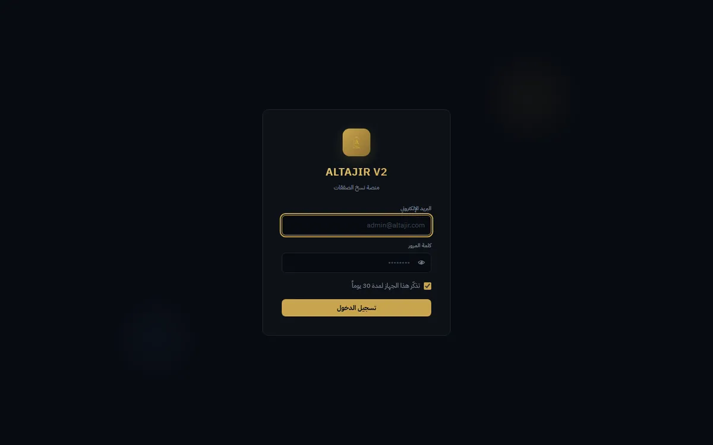
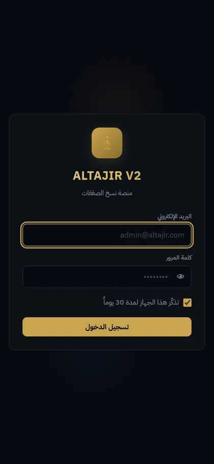

The scale, before any claim
Version one carried 15 real subscribers before it was stopped — and their trace is still measurable in the production database: 823 of 998 execution records lost their subscriber link when those accounts were deleted (sub_id = NULL). This version was rebuilt from scratch: two current subscribers, neither of whose balance has ever been read successfully (`last_account_info_at` = NULL for both), with 175 executions between them · 4 staff accounts on separate roles (admin 1 · analyst 2 · marketer 1) · 127 trades on a single symbol (XAUUSD), zero open positions · last execution 2026-08-24, execution halted today · the domain is live and returns 200.
- The problem
- MetaAPI's `profit` field is cumulative, not floating: their documentation defines it as the position's cumulative profit — the unrealized part of what is still open plus the realized part of what was closed. It also changes its own definition mid-trade: before any partial close it excludes swap and commission; after the first partial close it includes them, through `realizedProfit`, defined as "including commissions and swap". So after booking half of a winning trade, the cell still reads the old profit while the volume has halved, producing an impossible row such as "0.05 lots · +$10.00" while the still-open part is in fact losing — and this is what both the analyst and the subscriber were shown. In `docs/broker-pnl-evidence.md:36` the screen says "winning +$5.91" while the truth about the open part is "losing −$1.34". The naive fix, `Number(x) || 0`, fails silently twice: it swallows and replaces the legitimate zero at break-even, and it turns "we don't know" into "nothing", so a missing number looks reassuring. The fix is in `packages/backend/src/services/positionPnl.js:37-67`: a four-tier ladder in which each tier declares the number's origin in a `source` field and its need for a visible warning in `warn` — `unrealizedProfit` directly, then deriving `profit − realizedProfit`, then the cumulative value flagged with a warning, then `null` rather than zero; validity is checked with `Number.isFinite` alone, with no `|| 0` (line 24). On top of that sits a standing guard: `identityBreach` checks `profit ≡ unrealized + realized` on every positions read and inserts an alert row throttled to once per hour (`packages/backend/src/routes/analyst.js:1245` and `:1254`).
- What it proves
- That Hani distinguishes a wrong number from an unknown one, and refuses to hide the second behind a reassuring zero — a decision baked into the return type itself (`{value, source, warn, reason}`), not a comment in the margin. And that he builds a guard which tests his own assumption automatically on every read, and keeps the frontend copy from drifting with a test that compares both functions field by field (`test/bookLotsMirror.test.mjs`) — meaning he assumes his understanding might be wrong and builds the detector before anyone catches the error for him.
The mechanism
The defect happens first, then the mechanism that makes it impossible.
How to read it The defect: MetaAPI’s cumulative profit shown as the open leg’s floating profit — after a partial close the screen read +5.91 while the open part was −1.34. The ladder stops it: every number declares its origin; the cumulative figure passes only flagged. The last rung returns null, never zero: Number(x) || 0 would collapse “unknown” and a real break-even into one silent 0.
Screens
Captured 2026-09-05 from the addresses shown beneath them, exactly as served — nothing staged.


The code, verbatim
export function openPnl(pos) {
const p = pos || {};
// ① الحقل الصحيح مباشرةً — عائم الجزء الباقي وحده
const unreal = num(p.unrealizedProfit);
if (unreal !== null) {
return { value: unreal, source: 'unrealized', warn: false, reason: null };
}
// ② الهوية التعريفية: profit − realizedProfit ≡ unrealizedProfit. اشتقاق لا تخمين،
// فلا يستحق تحذيراً. نقرأ الحقل مباشرةً حين يتوفّر (حقل واحد بدل اثنين) ونشتقّ هنا فقط
const profit = num(p.profit);
const realized = num(p.realizedProfit);
if (profit !== null && realized !== null) {
return { value: profit - realized, source: 'derived', warn: false, reason: null };
}
// ③ لا تفصيل إطلاقاً: نعرض التراكمي — وهو ما كان يُعرض دائماً — لكن **موسوماً**.
// إخفاء الوسم هنا يعيد العطل نفسه صامتاً، وهو بالضبط ما يمنعه هذا الملف
if (profit !== null) {
return {
value: profit,
source: 'cumulative',
warn: true,
reason: 'رقم تراكمي — قد يشمل ربحاً محجوزاً سابقاً',
};
}
// ④ لا رقم أصلاً. null لا صفر: «لا نعرف» ليست «لا شيء»
return { value: null, source: 'none', warn: true, reason: 'البروكر لم يُرسل رقم الربح' };
}
Copied verbatim from the repository; nothing elided.
Every number, and the command that produced it
-
564
✅ lines in the test output and zero ❌ — 24 of them are rollups (23 files + a final line), leaving 540 individual checks
Source
cd packages/backend && node test/run-all.mjs | grep -cE '^(✅|❌)' -
23
test files, all passing, discovered from disk via readdirSync rather than a hand-kept list — and wired as a real deploy gate in deploy.sh (lines 30 and 170)
Source
ls packages/backend/test/*.test.mjs | wc -l -
42
checks on the profit-ladder logic alone in positionPnl.test.mjs
Source
cd packages/backend && node test/positionPnl.test.mjs | tail -1 -
998
execution commands recorded in the production database (693 success · 276 skipped · 27 failed · 2 uncertain)
Source
ssh srv1564240 'sudo -u postgres psql -d altajir -At -c "SELECT status, count(*) FROM execution_logs GROUP BY status"' -
0
estimated-profit rows out of 998 — not a single guessed number stored in the database
Source
ssh srv1564240 'sudo -u postgres psql -d altajir -At -c "SELECT count(*) FILTER (WHERE profit_estimated), count(*) FROM execution_logs"' -
0.000000
identity breach of profit ≡ unrealized + realized across three demo accounts, at full floating-point precision
Source
docs/broker-pnl-evidence.md:12-14 — عمود «خرق الهوية» على Demo · Demo10 · Demo2
What it does not do
- It has never read any subscriber's balance: the only two rows in the subscribers table both have `last_account_info_at` NULL — the system has not once succeeded in reading either account's balance.
- The measured evidence for the sign inversion comes from three accounts named literally Demo, Demo2 and Demo10 — demo accounts, not real money. And the code comment at `positionPnl.js:139` still states that the identity "could not be verified against a real account (the broker accounts were suspended at the time of the fix)".
- There is no billing or subscription logic in the product at all: grep for stripe/billing/invoice/checkout across `packages/backend/src` returns zero hits. Payment happens outside the product, over Telegram.
- There is no git remote: `git remote -v` returns zero lines. No copy of the code exists off a single machine and CI is not possible — the tests run as a local gate inside deploy.sh rather than as a pipeline. The absence is documented as context in `docs/adr/0005-local-verify-gate-instead-of-ci.md`.
Stack
- Node.js + Express 4 (ESM، بلا TypeScript — صفر ملف .ts/.tsx خارج node_modules)
- PostgreSQL 16.15 على السيرفر — 17 جدولاً
- React 18.3 + Vite 5.4 + lightweight-charts 5.2
- MetaAPI عبر REST مباشرةً (node-fetch، بلا SDK) — mt-client-api-v1
- JWT في cookie + bcryptjs + aes-256-gcm لتوكنات البروكر في القاعدة
- Telegram Bot API للتنبيهات والتقارير
- Playwright (a11y + layout + visual regression) — 3 ملفات spec
- pnpm workspaces — 3 حزم: backend / frontend / marketing
- نشر: bash deploy.sh (اتصال SSH واحد + مرحلة staging ثم mv + trap استعادة من نسخة احتياطية) + pm2 + nginx + Let's Encrypt
No public repository: the project has no remote at all.